PERJALANAN KECIL ZYAN
Alhamdulillah, pada 9 Juli 2024 di Kota Cimahi, Allah telah menghadirkan malaikat kecil kami, Zyan Muhammad Syakir. Setiap tangisan pertamanya menjadi melodi terindah yang memenuhi ruangan, dan setiap senyumnya bagaikan cahaya yang menerangi hari-hari kami. Dengan penuh rasa syukur, kami menyambut kehadirannya sebagai amanah terindah dari Allah SWT.
Perjalanan indah Zyan baru saja dimulai. Semoga Allah senantiasa
membimbing langkah-langkahnya, melindungi setiap hembusan nafasnya,
dan menjadikannya anak yang sholeh, cerdas, dan bermanfaat bagi
agama, bangsa dan negara. Aamiin Ya Rabbal Alamin.
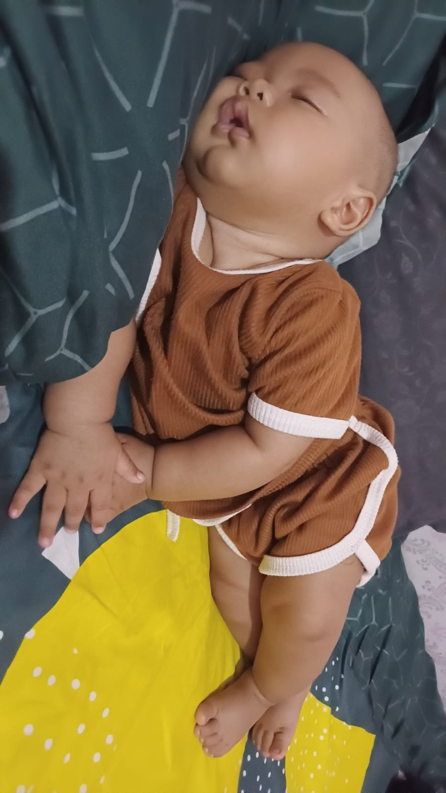
Zyan lagi bobo

Zyan lagi tengkureb
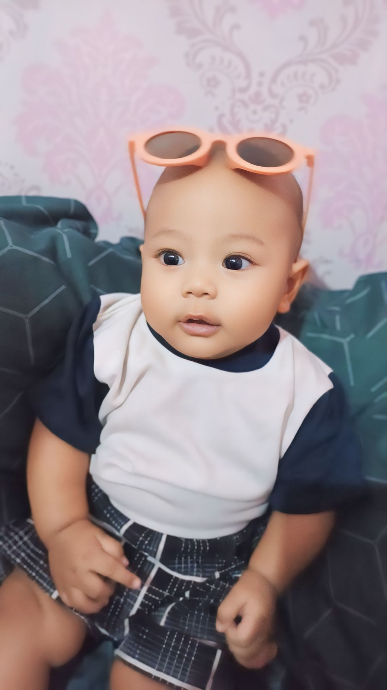
Zyan lagi bergaya
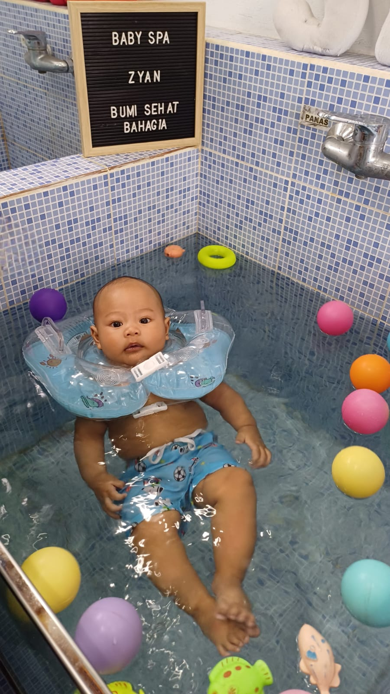
Zyan lagi berenang
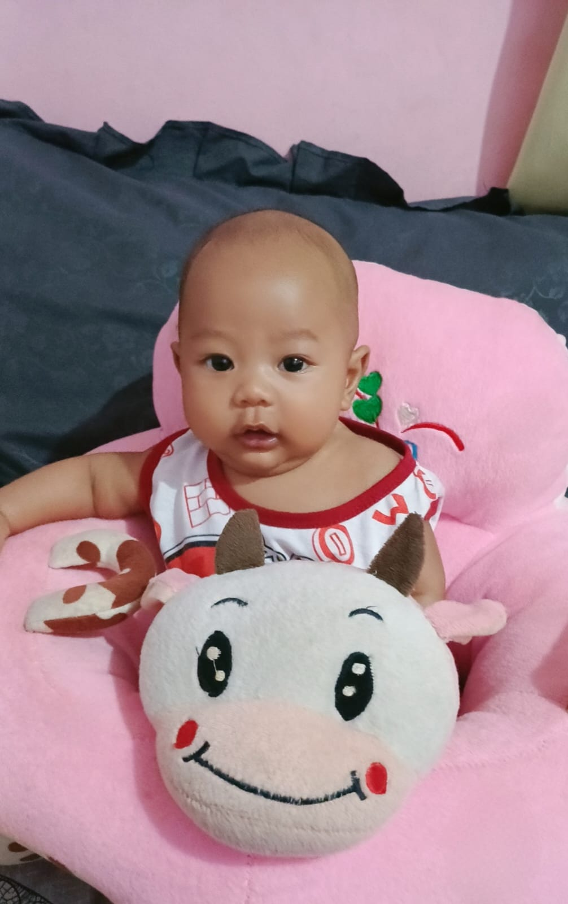
Zyan lagi pertama kali bisa duduk
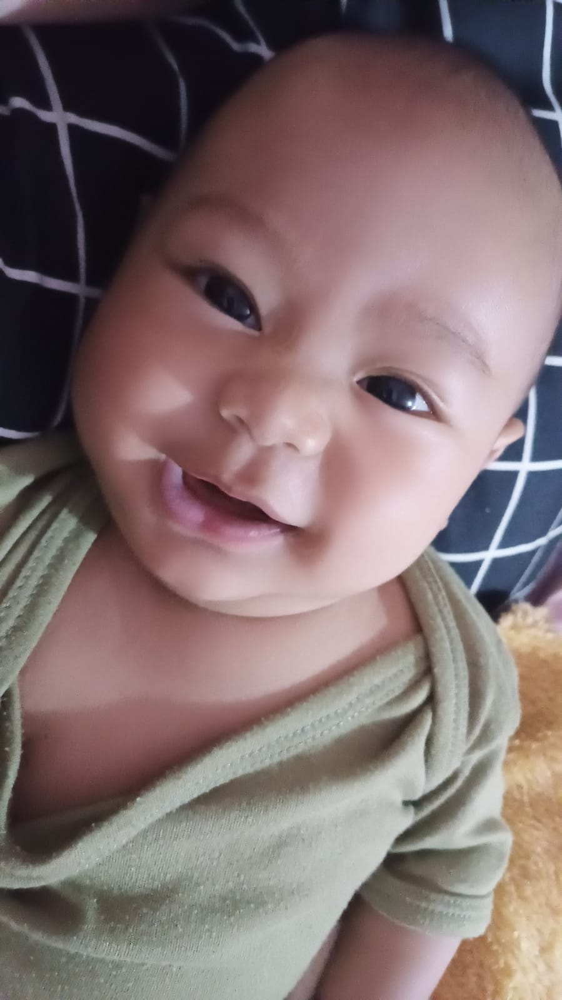
Zyan lagi senyum manis
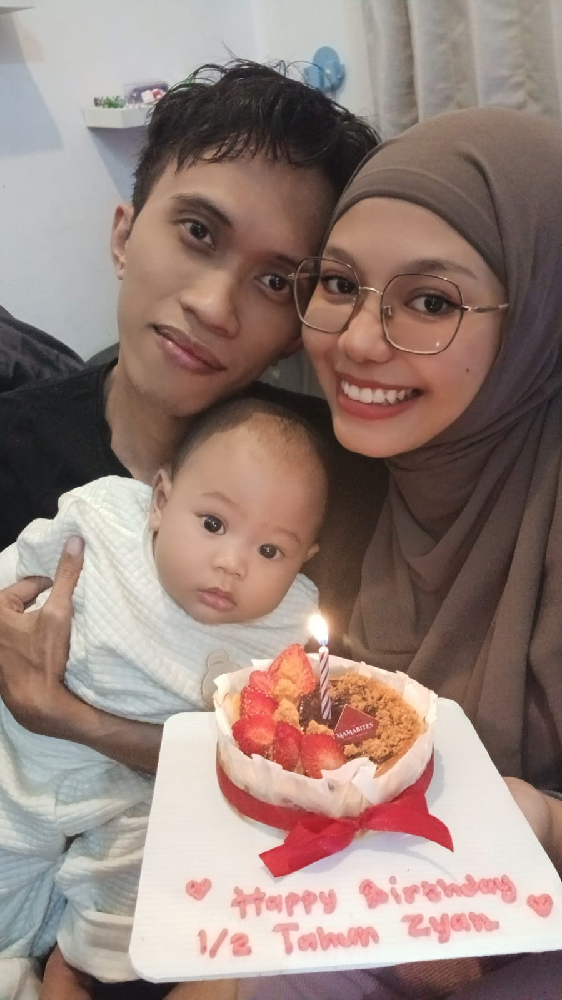
6 bulan pertama yang penuh kebahagiaan!
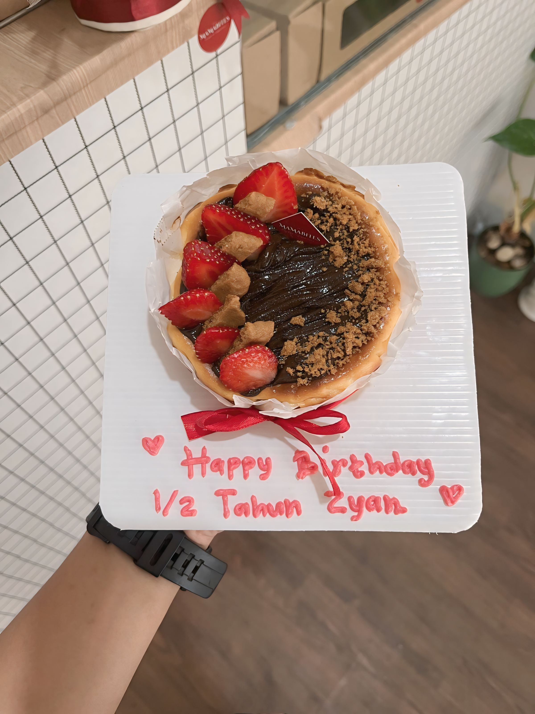
Merayakan milestone dengan bolu spesial
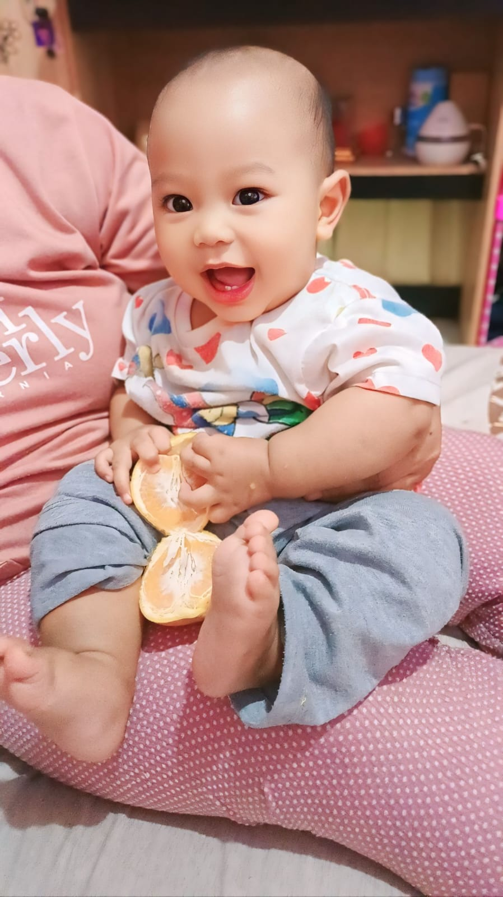
Si kecil sudah punya dua gigi lucu!
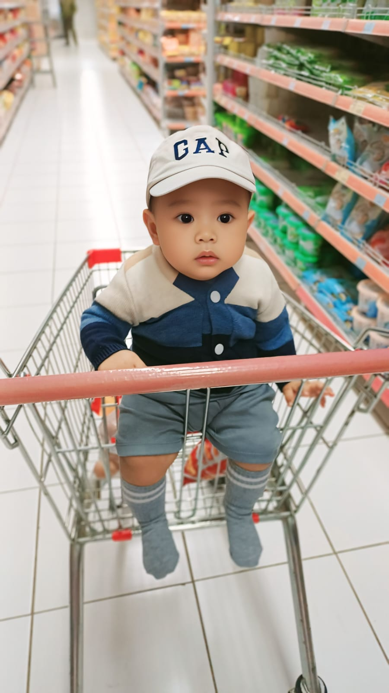
Pengalaman pertama belanja bareng
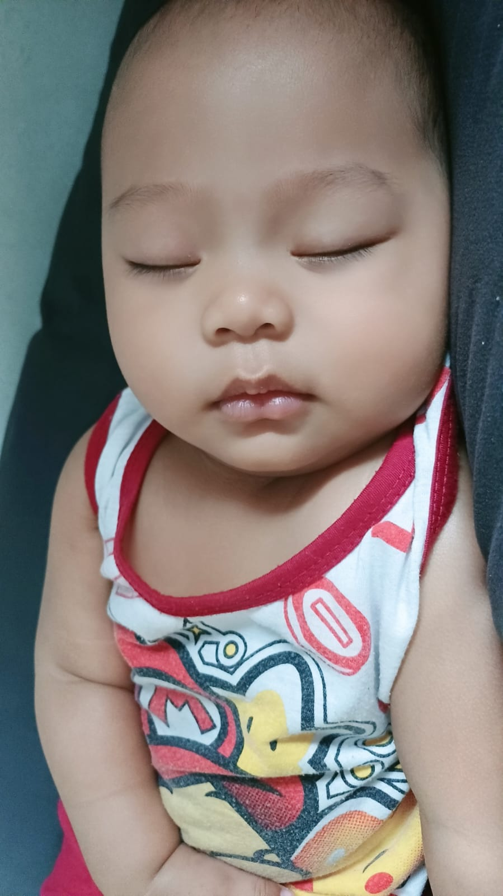
Bobo siang yang damai dan nyenyak
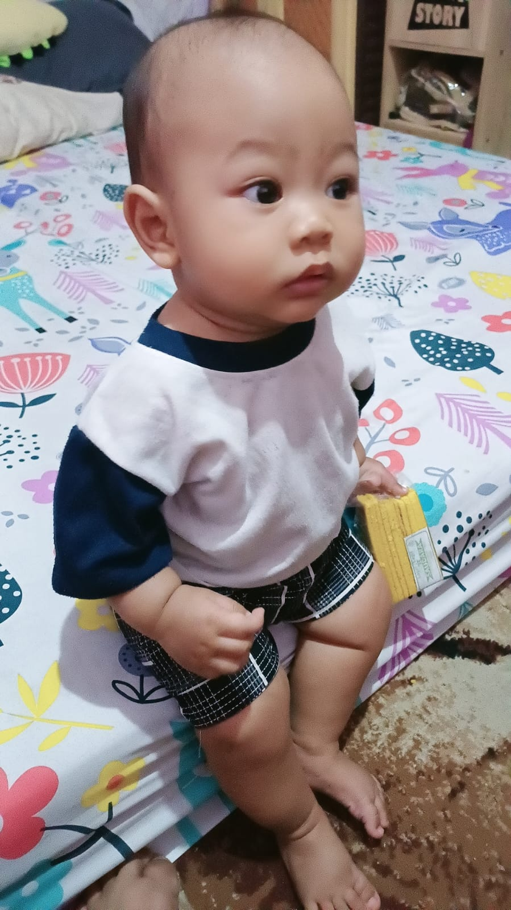
Pencapaian baru: duduk tegak sendiri!
Latihan tengkureb si jagoan kecil
SEMOGA MENJADI ANAK YANG SHOLEH DAN BERBAKTI
Selalu Dalam Lindungan Allah SWT
My Boy
syaifulbahri.bd@gmail.com
085711900035